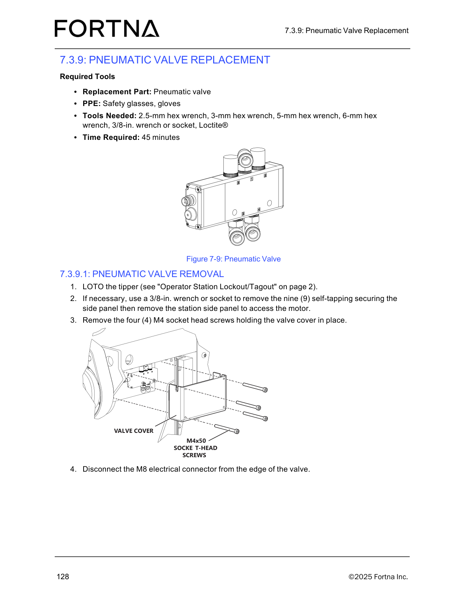

| Procedure ID | proc_remove_pneumatic_valve_from_tipper_loto_disconnect_v1 |
|---|---|
| Title | Remove Pneumatic Valve From Tipper (LOTO, side panel access, valve cover screws, M8 connector disconnect) |
| Procedure Type | recovery |
| Primary Role | operator |
| Support Safe | Yes |
| Capability Tags | tipper_station_fault |
| Access Surface | physical_floor |
| Audience Roles | operator |
| Failure Pattern Tags | None |
| Validation Status | needs_sme_review |
| Merge Status | source_finalized |
Safely prepare the OptiSweep tipper for pneumatic valve replacement by performing lockout/tagout (LOTO), exposing the valve cover (including removing the station side panel if needed), removing the valve cover fasteners, and disconnecting the valve’s M8 electrical connector.
Use when you are preparing the OptiSweep tipper station for pneumatic valve replacement and need to LOTO the tipper, access the valve cover, remove the valve cover fasteners, and disconnect the valve’s M8 electrical connector.

Responsible role: operator
Instruction:
On the physical floor, stage the replacement pneumatic valve, PPE (safety glasses and gloves), and the required hex wrenches (2.5-mm, 3-mm, 5-mm, 6-mm), plus a 3/8-in. wrench or socket and Loctite®.
Expected result:
You have the specified tools/PPE available to proceed with LOTO, side panel access (if needed), valve cover fastener removal, and M8 connector disconnection.
Responsible role: operator
Instruction:
Perform LOTO on the tipper using the manual’s “Operator Station Lockout/Tagout” procedure (referenced on page 2).
Expected result:
The tipper is locked out/tagged out prior to removing the valve cover and disconnecting the M8 electrical connector.
Stop or Escalate If:
Responsible role: operator
Instruction:
If necessary, use a 3/8-in. wrench or socket to remove the nine (9) self-tapping securing screws for the station side panel, then remove the station side panel to access the motor.
Expected result:
Station side panel is removed (when necessary) to access the motor/valve cover area.
Stop or Escalate If:
Responsible role: operator
Instruction:
Remove the four (4) M4 socket head screws holding the valve cover in place.
Expected result:
The four (4) M4 socket head screws are removed and the valve cover is no longer secured.
Stop or Escalate If:
Responsible role: operator
Instruction:
Disconnect the M8 electrical connector from the edge of the valve.
Expected result:
The M8 electrical connector is disconnected from the edge of the valve.
Stop or Escalate If: